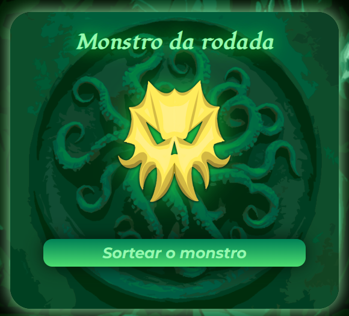
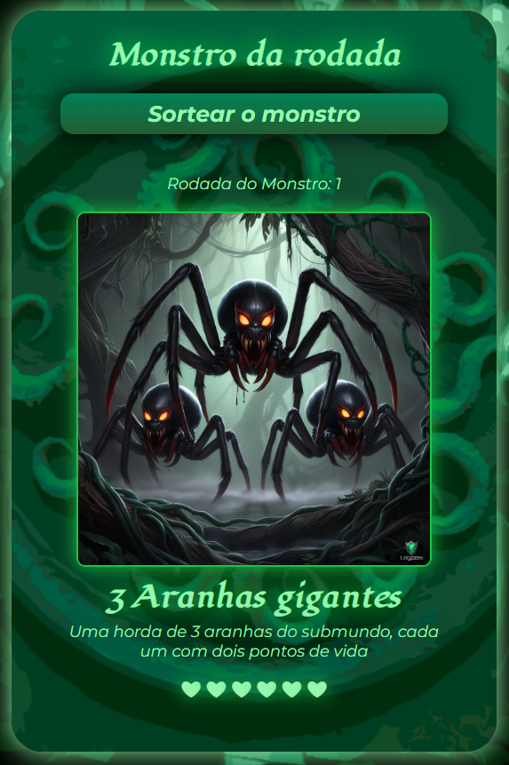
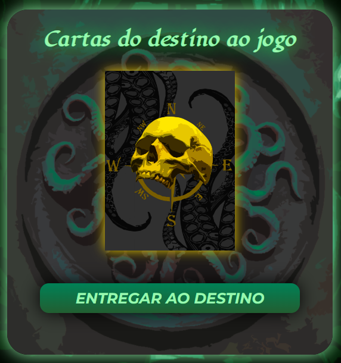
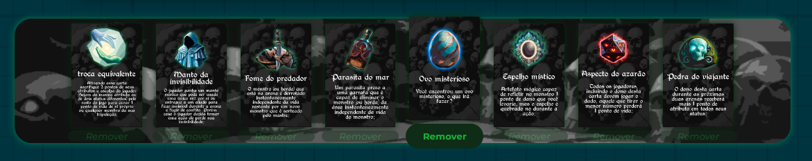

|
GitHubRatazanas do Mar é um RPG desenvolvido com a premissa de oferecer regras simplificadas, proporcionando uma experiência satisfatória tanto para jogadores experientes quanto para aqueles que nunca tiveram contato com esse tipo de jogo. Com sua versão adaptada para o digital, o jogo oferece flexibilidade para ser aproveitado da maneira que você preferir: seja presencialmente, com um notebook à mesa, ou remotamente, por meio de videochamadas, com o mestre compartilhando sua tela.
O objetivo de Ratazanas do Mar é que todos os jogadores alcancem o final da ilha, atravessando suas 10 regiões. Para avançar, é necessário derrotar um chefe em cada arena. Na última região, os jogadores deverão enfrentar 2 monstros sorteados para completar a jornada.
Em Ratazanas do Mar, as classes foram cuidadosamente pré-definidas para que o jogo esteja pronto para ser jogado, permitindo que os jogadores foquem sua criatividade na criação de seus personagens. Pensando na praticidade do formato digital, todos os campos do jogo são editáveis, garantindo maior personalização e dinamismo. As ações dos jogadores são simplificadas em três atributos principais: Força, Agilidade e Percepção. Esses atributos são usados pelo mestre para decidir qual terá maior peso nas decisões das ações, tornando o sistema intuitivo e rápido de usar. Cada atributo em Ratazanas do Mar possui um valor padrão, mas o jogo conta com mecânicas que permitem a manipulação desses números. O mestre tem total liberdade para alterar os valores a qualquer momento, ajustando o jogo conforme a necessidade ou o desenrolar da aventura. Para facilitar ainda mais a experiência do jogador, os ícones de vida são clicáveis, permitindo uma visualização clara e prática da quantidade de pontos de vida restante. O botão "Meu Turno" ajuda a situar o jogador sobre sua vez na rodada, enquanto o contador de rodadas ao lado mantém a organização da mesa, evitando confusões sobre a ordem de quem deve jogar.
O Mercenário possui a habilidade especial de buscar o ponto fraco do monstro da arena. Se ele for bem-sucedido, o ponto fraco será exposto, permitindo que apenas ele cause um dano crítico de 2 pontos de vida ao monstro. Essa ação tem um custo de 1 turno.
O Cozinheiro é o único capaz de preparar algo para restaurar 1 ponto de vida, seja para si mesmo ou para um aliado. Essa ação tem um custo de 1 turno.
O Feiticeiro tem a habilidade de dominar a consciência do monstro da arena, fazendo com que ele fique sob seu controle por 1 turno completo. Essa ação tem um custo de 2 turnos, exigindo dois testes de Percepção bem-sucedidos consecutivos.
O Apostador tem a habilidade de rodar o dado de Percepção mais de uma vez, caso a primeira tentativa não seja bem-sucedida. Essa ação só pode ser realizada para testes de Percepção e tem o custo de 1 turno futuro, que será perdido ao fazer o segundo teste.
O Bombardeiro pode criar uma bomba utilizando recursos disponíveis nas proximidades, causando 2 pontos de dano ao monstro da arena. Essa ação tem um custo de 1 turno.
O Mestre das Feras tem a habilidade de direcionar efeitos negativos e dano para suas criaturas, protegendo-se assim. Ele controla as seguintes criaturas: Mestre das Feras: 3 pontos de vida Papagaio: 2 pontos de vida Criatura na Jaula: 1 ponto de vida Se o Papagaio for perdido, o Mestre das Feras sofre uma redução de -2 pontos de Percepção. Se a Criatura na Jaula for perdida, ele perde -1 ponto de Força.
O Druida tem a habilidade de se transformar em uma criatura escolhida, ganhando 2 pontos de vida extras e 2 pontos de Força. Se os 2 pontos de vida extras forem perdidos, o Druida retorna à sua forma original, perdendo também a Força extra. Essa habilidade tem um custo de 1 turno e exige dois testes bem-sucedidos no atributo escolhido. Pode ser utilizada apenas uma vez durante o jogo.
O Viking pode se colocar como escudo humano, recebendo o dano de qualquer aliado. No entanto, ele perde seu próximo turno para se recuperar do ataque.
Para determinar se sua ação será bem-sucedida ou não, é essencial que o botão "Meu Turno" esteja ativado, garantindo que seus atributos sejam levados para o julgamento do destino. O mestre selecionará o atributo mais relevante para a ação clicando em uma das bolinhas indicadoras. Em seguida, o resultado será decidido ao apertar o botão "Rodar Sorte".
O mapa de Ratazanas do Mar é dividido em 10 regiões, e cada arena conta com um chefe que os jogadores precisam derrotar para avançar na jornada. A maneira como a narrativa se desenrola fica a critério do mestre, garantindo flexibilidade e criatividade no desenvolvimento da história.  Antes de iniciar uma nova arena, o mestre deve sortear o monstro clicando no botão "Sortear o Monstro". Cada monstro possui uma quantidade específica de pontos de vida, representados por corações clicáveis. Essa funcionalidade facilita a visualização e o acompanhamento de quantas vidas o monstro ainda possui, tornando o controle mais prático e intuitivo. 
As Cartas do Destino foram criadas para adicionar um elemento imprevisível à narrativa, podendo ajudar os jogadores ou tornar sua jornada ainda mais desafiadora. Cada carta apresenta uma situação única, que pode ser benéfica ou maléfica. Devido a essa natureza imprevisível, as cartas só podem ser puxadas pelos jogadores, mediante votação, em qualquer momento do jogo.  No entanto, existe um limite de até 8 cartas ativas. Caso os jogadores desejem puxar mais cartas, será necessário abrir mão de uma puxada anterior. Apenas cartas relacionadas a itens, ações utilitárias ou maldições já curadas podem ser removidas do banco. Cartas cujo efeito expirou naturalmente, sem a influência dos jogadores, permanecem no banco e não podem ser descartadas. 
Em 2020, durante o curso de Design Gráfico, desenvolvi meu TCC: um jogo de tabuleiro de RPG. Esse foi meu primeiro grande projeto, onde coloquei a mão na massa para criar algo do zero, desde as mecânicas até a identidade visual, tudo feito com muito cuidado e dedicação. A entrega foi um sucesso, mas, infelizmente, o projeto acabou ficando na gaveta, e nunca tive a chance de transformá-lo em um jogo físico. Com o tempo, minha trajetória mudou. Me aprofundei na área de programação e desenvolvimento, e foi assim que surgiu uma nova oportunidade: trazer aquele projeto especial para o mundo digital. Agora, o jogo está disponível online, acessível a todos, permitindo que cada jogador explore e aproveite da maneira que preferir. Estou aberto a críticas e sugestões, pois acredito que sempre há espaço para melhorias. Enquanto eu não estiver completamente satisfeito, continuarei atualizando e refinando este projeto, mantendo vivo o mesmo entusiasmo que tive ao criá-lo pela primeira vez.
Todas as ilustrações utilizadas foram reaproveitadas das que estavam no TCC, mas boa parte do conteúdo visual, incluindo as ilustrações das Cartas do Destino e dos Monstros, foram geradas por inteligência artificial.